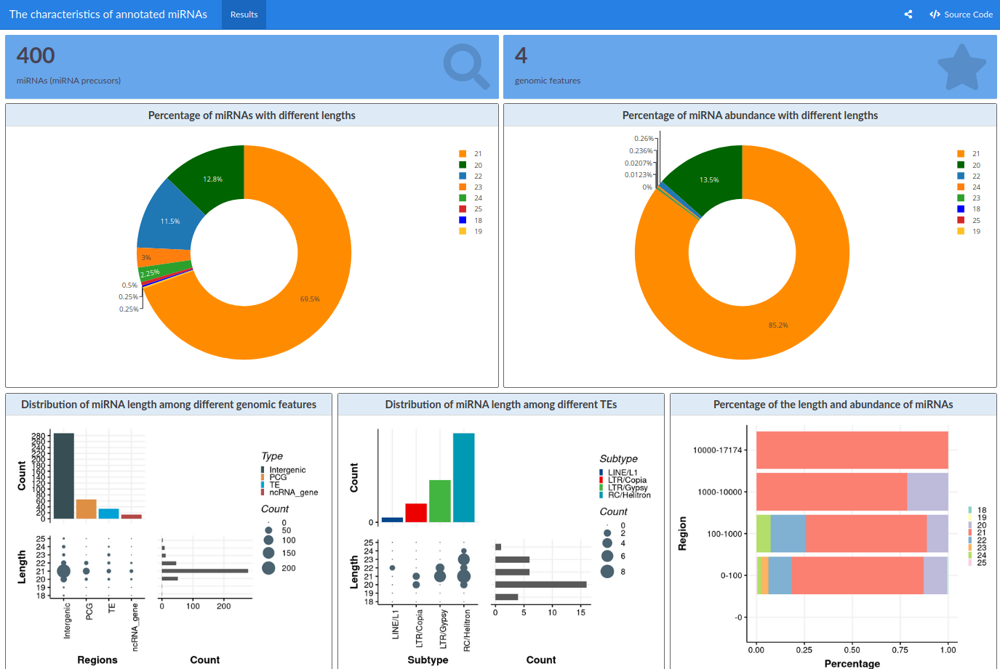
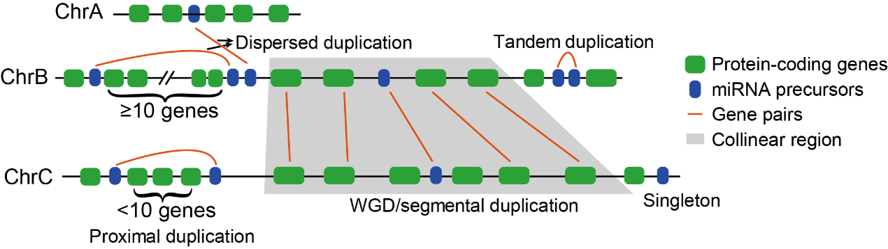
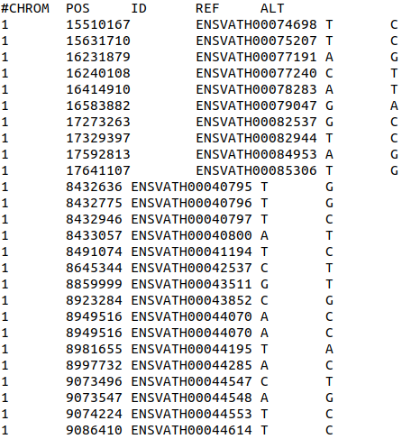
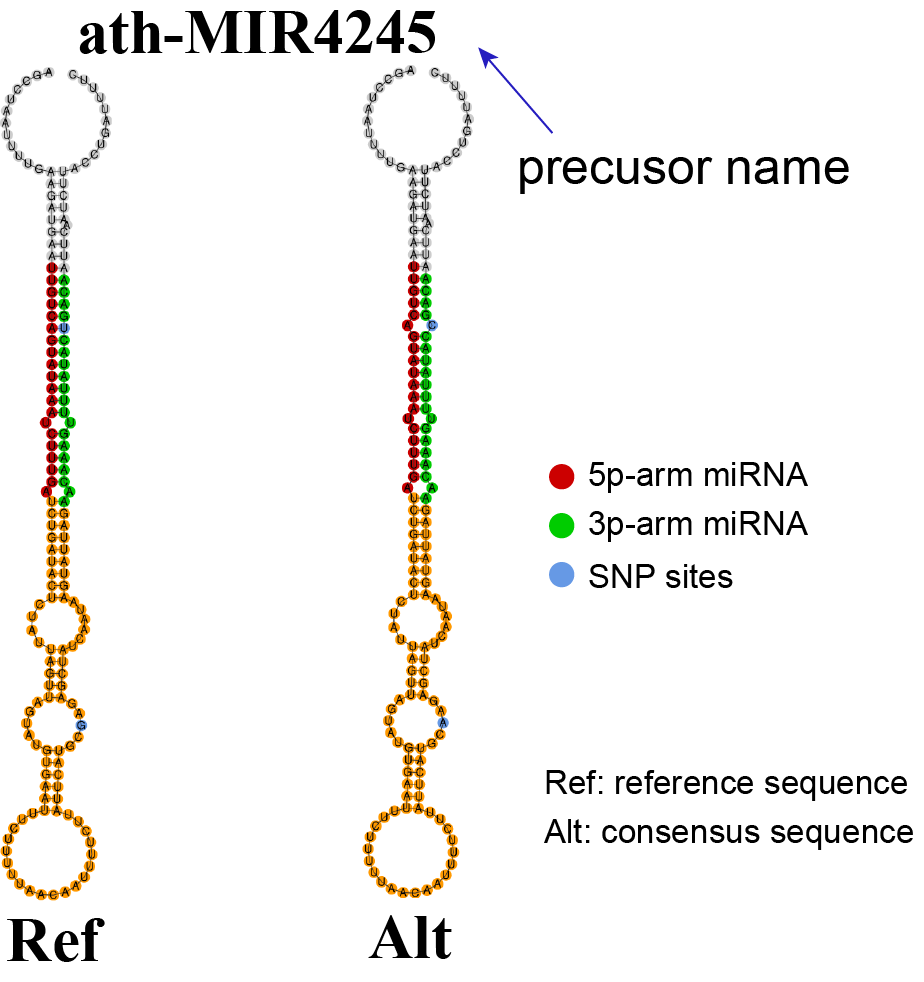

Useful Tools¶
This module provides several tools for downstream exploratory analysis.
associationAnalysis¶
This function is designed to interactively analyze and visualize the characteristics of annotated miRNAs.
Input¶
Annotation file of miRNAs derived from miRNASelection or miRNATranslate tool: miRNA table from
miRNASelectionormiRNATranslatetool.Genome annotation file: Genome annotations will be used to label the source of miRNAs. We provided Arabidopsis data
genome_annotation.txtwith following format:
Note:
- PCG - protein coding gene; ncRNA_gene: non-protein coding RNA gene; TE: Transposable element.
- lncRNA: long non-coding RNA; LTR: long terminal repeat; RC: Rolling-circle.
Output¶
Distribution of miRNAs in different genomic features: The characteristics of annotated miRNAs include the feature distribution of miRNAs with different lengths; the number and abundance of different miRNA lengths; the length of different genomic features, such as genes, TEs (transposable element), and lncRNAs; distribution of miRNA length and abundances among different genomic features. The complete preview of the results are available at Output of associationAnalysis.

duplicationMIR¶
This function aims at identify miRNA duplication events by means of whole genome duplication (WGD) and others types of duplications.
Input¶
- Protein sequences of protein-coding genes.
- The GFF3 annotation of protein-coding genes: Genome annotations will be used to label the source of miRNAs.
- miRNA annotation: miRNA annotation file from
miRNASelectionormiRNATranslate.
Output¶
- Duplication events of miRNAs: The detailed duplication events of each miRNA.
- According to the duplication modes, miRNA duplications were categories into five types: WGD/segmental (collinear genes in collinear blocks with at least 5 gene pairs), singleton (no duplication), tandem (consecutive repeat), proximal (in nearby chromosomal region but not adjacent), disperse (other duplications than segmental, tandem, and proximal)

Plot of miRNA duplication events: The bar plot gives a graphical image of duplication events.
miRNAs in syntenic blocks: The file contains detailed miRNA pairs generated from whole genome /segmental duplications.
sequenceVariation¶
This tool provides a complete assessment for effect of SNP on the RNA secondary structures.
Input¶
miRNA annotation: miRNA table from
miRNASelectionormiRNATranslatetool.SNP file: Genome annotations will be used to label the source of miRNAs. We provided Arabidopsis data
SNPs_in_Arabidopsis.txtwith following format:Note: #CHROM: chromosome; POS: The start position in the chromosome; ID: SNP names; REF: The allele in the reference genome. ALT: Any other allele found at that locus.
Output¶
Sequence variation on structures of microRNA precursors: A pdf file contains RNA structures comparison with SNP effects. The complete preview of the results is available at Output of sequenceVariation.
